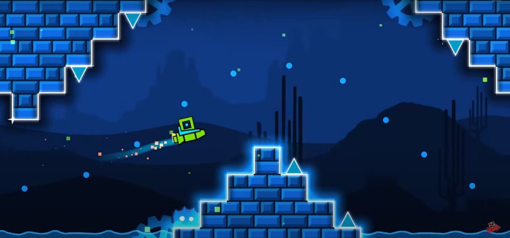

Geometry Dash SubZero
Geometry Dash SubZero is the only press-start version of the Geometry Dash series with a winter theme. Join to start thrilling jumps with 7 geometry shapes now!

In this new version, enthusiasts of geometry dash can experience top-notch design with a special winter theme. Sound, light, and challenges are always waiting for you to discover and break your limits. Now, let's run with 3 main game's content: Geometry Dash SubZero Online, Comparison With Other Versions, and Geometry Dash, the original version for the end.
Geometry Dash
Geometry Dash refers to a video game that will bring you to endless slopes, dangerous spikes, and even the sudden appearance of dangers. These difficulties always require the player's control and coordination ability to conquer them.
Referring to this game, it mentions the key features that have made this game so popular.
- Levels: Geometry Dash offers players many different levels and each level has its own challenges and obstacles. The design of each level is inspired by many different sources.
- Customization: It's possible for you to change the skin and color of your character through the list of characters and colors. This list has been upgraded through each version and you can also see this feature clearly through this Geometry Dash SubZero version.
- Gameplay: This game's gameplay always involves navigating your character to overcome a series of obstacles. The challenges can be different, but your goal is always the same: to reach the finish line of a level. The unified gameplay is also reflected in the controls as you can easily navigate your character with the left mouse button, spacebar, or up arrow.
- Graphics and sound: These two factors also contribute to the success of this series. Colorful graphics appeal to players while vibrant music helps players immerse themselves in each level.
When we mention these basic features, players cannot ignore this series as well as the latest version, known as Geometry Dash SubZero Online.
Geometry Dash SubZero Online
Geometry Dash SubZero Online gives you the convenience that you can access it on all platforms without installing it. The version on our website is this online version. Usually, many players need to download it to their devices before playing. However, this barrier was removed when the online version was released. With just a network connection, you can access and enjoy the game with all its features. Moreover, it is possible to access any location because the game has integrated unblocked feature. With these two online and unblocked features, our website is confident to be the best website to meet the entertainment needs of all players. Now, let's dig into the details of Running Instructions.
Running Instructions
Running Instructions gives you detailed information on how to play and how to control your character. Once you know the basics, you can move and conquer achievements more easily.
In Geometry Dash SubZero, you can control your character to avoid the series of spikes and traps by using one of the following 3 hotkeys: Spacebar, Up Arrow, and Mouse Click. With each use of the hotkey, your character will jump off the ground or change direction depending on the terrain and character type. Although it is simple to use, controlling your character in this version is not easy. There are many obstacles and dangers on each path.
One of the most common obstacles is spikes that can destroy your character in a single collision. Blocks or walls have the same function as spikes when they can also eliminate your character. Besides, the complexity of the terrain also contributes to dangerous situations for you. This online game is designed with many platforms that are arranged to create many different types of terrain. You can run on straight platforms or get into zigzag tunnels. Any situation is possible and all you need to do is stay calm and conquer each journey.
Calmness will bring you many benefits, so try to practice this ability. Besides, to run to the endpoint, you need to focus on the roads and react quickly to adapt to change. Note that obstacles may appear unexpectedly and your character may change direction unintentionally. In these situations, your control and agility are even more tested. All the mentioned difficulties are clearly shown in Geometry Dash SubZero Press Start, the first level of this arcade version.
Geometry Dash SubZero Press Start
Geometry Dash SubZero Press Start known as the first level of this geometry version promises to bring you the best experiences. This level not only maintains the basic features but also offers exciting improvements for all players.
The first familiar thing is the mode, including Practice and Official modes. You can find these two modes in other versions with familiar features. Let's repeat it again to clearly see the difference between these two modes.
Their map and the challenges are exactly the same in terms of design. In Practice mode, however, you can use checkpoints to aid your run. You can use the Z key to set a checkpoint and the X key to remove the previous checkpoint. What is the effect of the checkpoint? The checkpoint will mark your successful travel distance. After your character is destroyed, you can start over at the latest checkpoint instead of going back to the starting line. This checkpoint factor will bring a lot of advantages if players can take advantage of them, especially in saving time. You can practice in Practice mode to get used to the terrain and dangers. Be sure to grasp every obstacle you can face! After that, go to Official mode and conquer its Press Start level with just one play.
With two modes of this first level, you can challenge yourself with different levels of difficulty. Practice mode is easier than Official mode because you have checkpoints to assist. However, the game requires you to complete the Official mode before proceeding to the next level. Level Press Start is just a warm-up period before other extreme challenges appear. So, if the game is too difficult to conquer, how to finish it? That's why the game will give you power-ups, coins, and trophies to encourage players.
Power-ups, Coins, And Trophies
Power-ups, coins, and trophies are important items in this adventure game. Because you have to face many difficulties to conquer all levels, this Geometry Dash SubZero game offers you some power-ups including jumping pads and jumping rings. As you can see, the level division is expressed through the number of stars. The Press Start level is only at 1 star, the easiest level in this game version. However, in order to conquer the 100% level, it's extremely challenging. Therefore, 2 power-ups have an important role for you to proceed to the next levels.
Although these two items both support your jumping ability, the support way is completely different. Jumping pads help you take a jump higher and further while jumping rings allow you to perform a jump in the air. When encountering these items, you should consider when to use them and when not to use them. Not all power-ups will benefit you. Sometimes, it'll be a dangerous trap that can lead to your death. Let's decide based on the situation and obstacles at that time! An example will appear in this initial period of the Press Start level. A jumping pad will make you jump high and hit the wall above. In this situation, you need to avoid using it. Overall, these two items help you conquer obstacles but they also contain dangers. In addition, they are also a useful way for you to receive the loot: coins and trophies.
Coins and trophies are randomly placed on the map. During the move, try to collect all these items to increase your achievement. The proudest achievement is winning 3 trophies per level and the number of trophies will be on the main screen. That's all, and now, it's time to learn about Geometry Dash SubZero Updates.
Geometry Dash SubZero Updates
Geometry Dash SubZero updates are clearly shown through coin update and update 2.2. First, coins appear in more dangerous positions. In particular, you will face a lot of difficulties to reach them. A good example is a hidden coin under a pyramid in stage 3. You have two directions of movement: follow the tunnel at the top or crash to the bottom of the pyramid to collect coins. However, the movement direction to get this coin is difficult to judge because among the many different pyramids, there is only one special and it is easy to miss. The coin challenges are updated a lot to deserve the title of this version: the most challenging version.
Besides, 2.2 updates fix bugs and upgrade levels. First upgraded in 2017, this version has been upgraded to 2.2 up to the present time. The most obvious change is the removal of the Record button. Players cannot continue to record directly with the design of the game. Instead, you need to use another support tool. This update will help the game run smoothly and use less space. After the update, this new version is more and more different from the previous versions. Let's compare previous versions with Geometry Dash SubZero now to see more clearly!
Comparison With Other Versions
Comparison with previous versions will give you the most comprehensive look at the features in this new subzero version. First, let's come to the similarities!
Similarities Through Versions
The similarities across versions are all well-known features of the Geometry Dash series. The gameplay and characters are all maintained from the original version when you will still continue to navigate your character to jump over a series of obstacles and reach the destination. The obstacles include different types such as blocks, spikes, wheels, saws, etc. In particular, they have the ability to move at different speeds in Geometry Dash SubZero. These familiar challenges appear in almost every version.
Besides, the similarity is also reflected in the character design. Players will be surprised by the diversity of character states including Cube, Ball, UFO, Wave, Ship, Robot, and Spider. These characters will have their own moving ways and they will change their state after going through a portal. For example, you will change from Cube to Ship with two typical moves. The cube will slide on slopes and jump when using the control keys. A Ship character is the opposite as it can fly in the air and it only changes direction with your control. Besides, it is possible to customize your character with a multitude of skins and colors. You can combine different outfits and colors to create a unique design. Don't forget to add effects to your character to make the game more interesting. After mentioning the similarities, it is impossible to ignore the differences between this version and the others.
The Uniqueness of Geometry Dash SubZero
The uniqueness of this new version will be reflected in the level design, sound, and theme. Levels in this version are impressive with complex tunnels, thorny roads, and dangerous rooms. All positions of obstacles change according to the arrangement of the developer. Besides, the music accompanying the journeys is very unique with the theme of electronic music. This catchy soundtrack perfectly matches the atmosphere of the game as well as always raising the fighting spirit of the participants.
Another dramatic change is the theme as this version transports you to the frozen winter world. On the blocks, there is always a layer of snow. The spikes are also icebergs and sparkling snowflakes will create accents on the roads. This theme is unlike all the previous versions. The developer seems to want to give players a new feeling with a special implication. Can the fire of victory in each player break the cold on each obstacle? You only can see this after you participate in this game!
In conclusion, the Geometry Dash series is always one of the top choices of online game enthusiasts. With the introduction of various versions, the position of this game remains unchanged and increasingly becomes a hot trend in the gaming world. In particular, the launch of Geometry Dash SubZero further marks the success of this Geometry Dash series after many years of release and development.